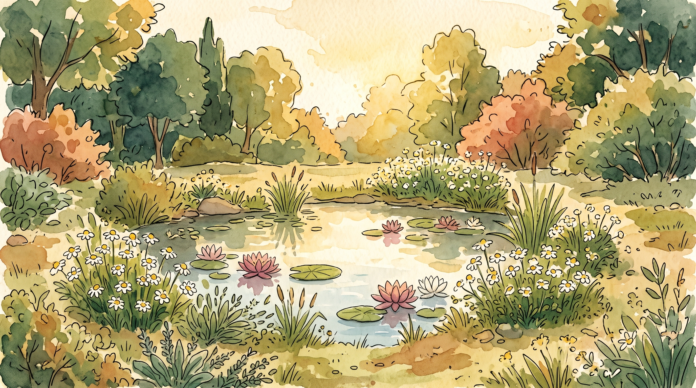
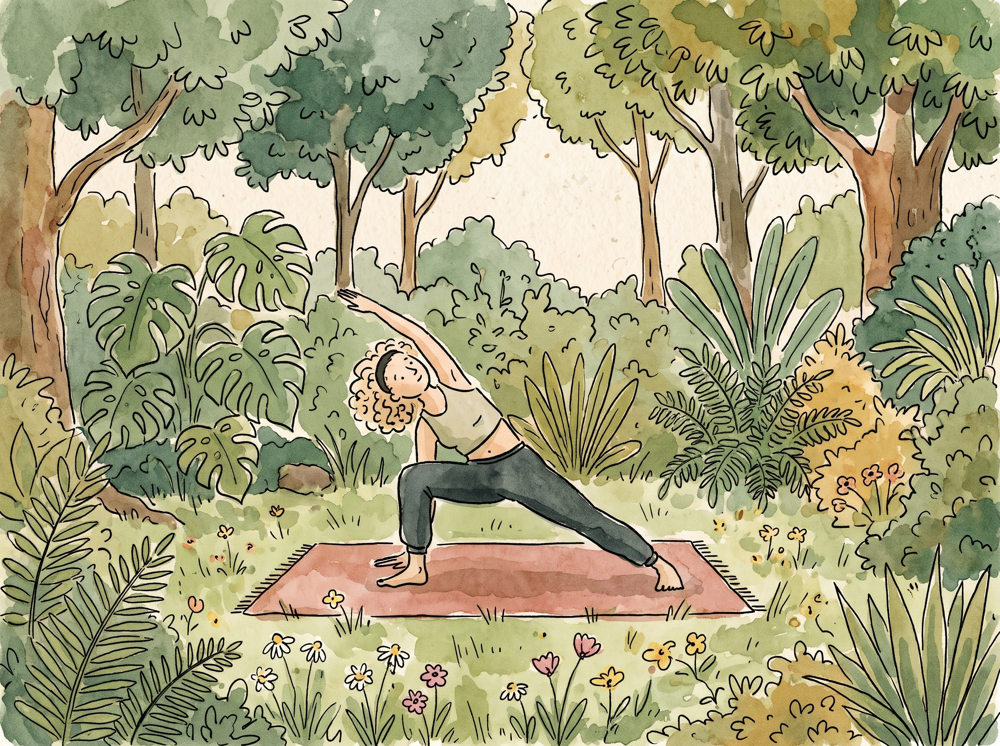
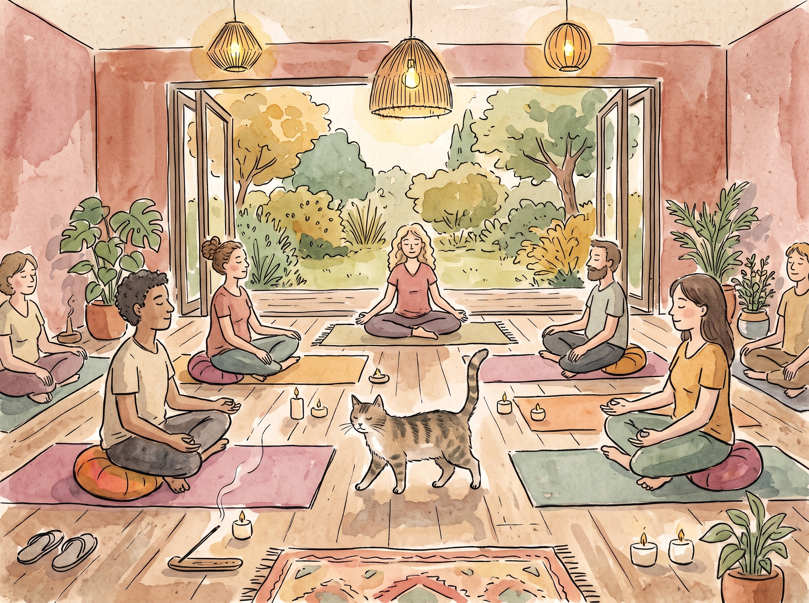
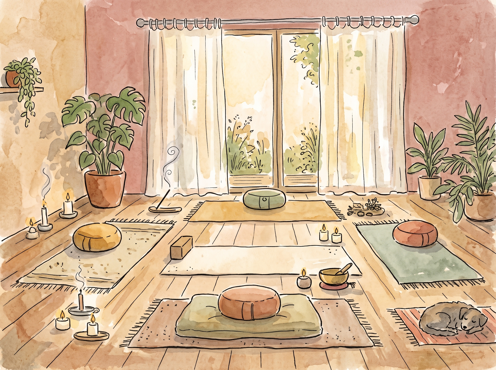
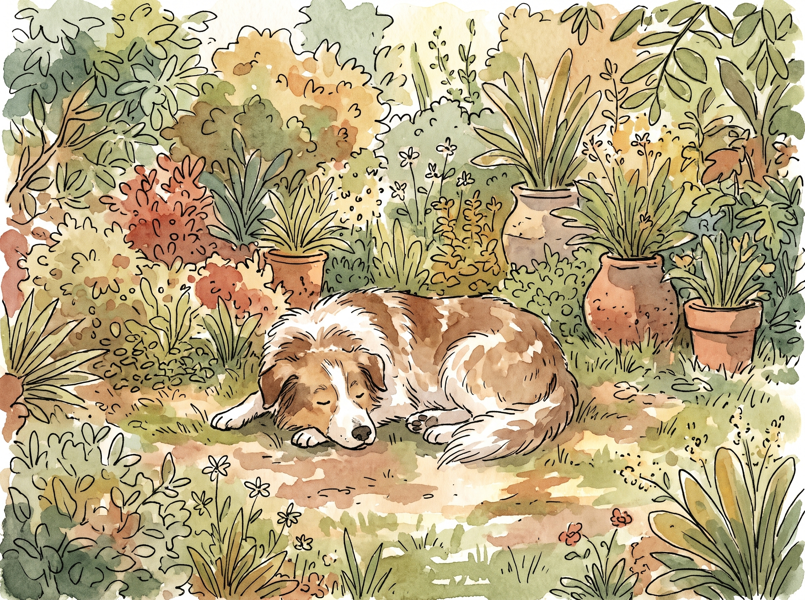
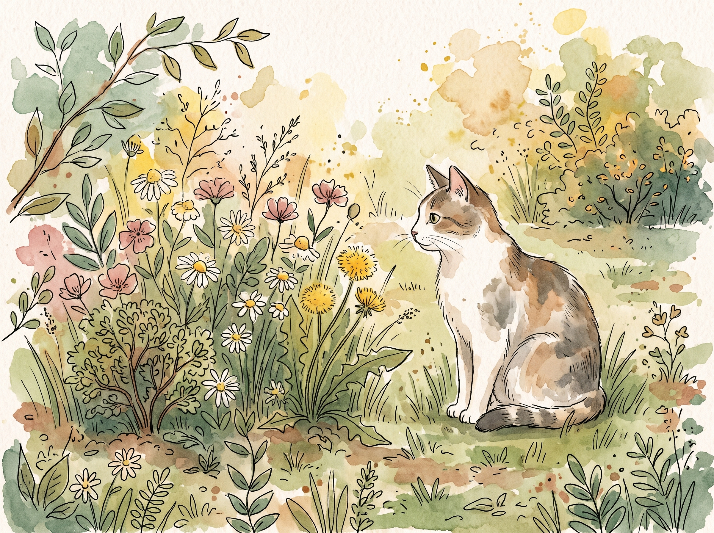
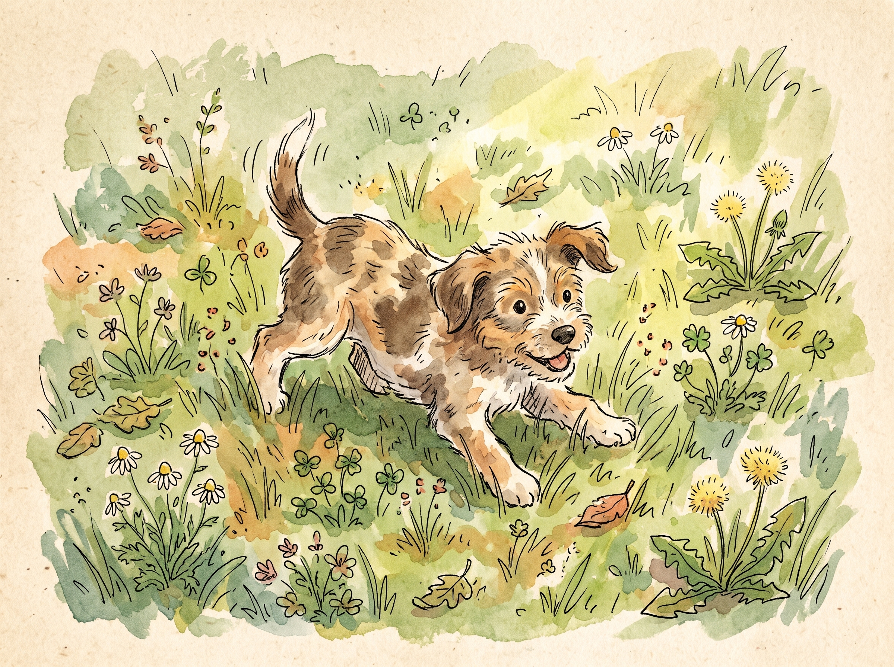

Florescer
Yoga, meditação, autoconhecimento e desenvolvimento pessoal com gentileza.
Um espaço para respirar, florescer e acolher.

Cuidar de si também significa aprender a cuidar do outro.
Yoga, meditação, autoconhecimento e desenvolvimento pessoal com gentileza.
Contemplação, mindfulness, equilíbrio e serenidade inspirada em tradições orientais.
Experiências afetivas, espontâneas e silenciosas entre pessoas e animais.
Proteção animal, incentivo à adoção responsável e construção de vínculos duradouros.
Respire. Você não precisa ter todas as respostas agora.

Equilíbrio & PresençaMovimento consciente em luz difusa, respeitando o ritmo natural de cada corpo.

Conexão AfetivaEncontros de relaxamento com a presença espontânea e livre de cães e gatos resgatados.

Silêncio InteriorPráticas contemplativas inspiradas no budismo para cultivar a calma e a compaixão.
Um encontro pode transformar duas vidas. Um lar pode começar com um olhar.

Cão • 3 anosCalmo e observador, aprecia sonecas ao sol e companhia tranquila no jardim.

Gata • 1 ano e meioDelicada e curiosa, aproxima-se com suavidade quando sente um ambiente sereno.

Cão • 7 mesesAfetuoso e brincalhão na medida certa, floresceu após o acolhimento dos protetores.
Na Casa Flor de Dentro, os animais jamais são tratados como acessórios decorativos. O bem-estar deles está sempre acima da experiência dos participantes: